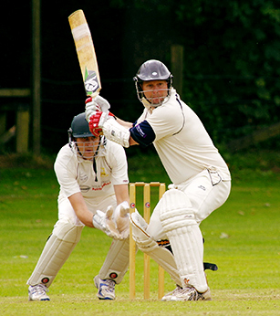

Cricket
Improve your cricket playing skills Here.
Cricket is a bat-and-ball game played between two teams of eleven players on a field at the centre of which is a 22-yard 20-metre pitch with a wicket at each end, each comprising two bails balanced on three stumps. The batting side scores runs by striking the ball bowled at the wicket with the bat and running between the wickets, while the bowling and fielding side tries to prevent this by preventing the ball.
Cricket is a bat-and-ball game played between two teams of eleven players on a field at the centre of which is a 22-yard 20-metre pitch with a wicket at each end, each comprising two bails balanced on three stumps. The batting side scores runs by striking the ball bowled at the wicket with the bat and running between the wickets, while the bowling and fielding side tries to prevent this by preventing the ball from leaving the field, and getting the ball to either wicket and dismiss each batter so they are "out". Means of dismissal include being bowled, when the ball hits the stumps and dislodges the bails, and by the fielding side either catching the ball after it is hit by the bat and before it hits the ground, or hitting a wicket with the ball before a batter can cross the crease in front of the wicket. When ten batters have been dismissed, the innings ends and the teams swap roles. The game is adjudicated by two umpires, aided by a third umpire and match referee in international matches. They communicate with two off-field scorers who record the match's statistical information Forms of cricket range from Twenty20, with each team batting for a single innings of 20 overs, to Test matches played over five days. Traditionally cricketers play in all-white sports , but in limited overs cricket they wear club or team colours.
features
Why Choose Us

Cricket is a bat-and-ball game played between two teams of eleven players on a field at the centre of which is a 22-yard 20-metre pitch with a wicket at each end, each comprising two bails balanced on three stumps.
- Advance skills
- Batting skills
- Bowling skills
- Cricket and management
faq
get every answers here
Forms of cricket range from Twenty20, with each team batting for a single innings of 20 overs, to Test matches played over five days. Traditionally cricketers play in all-white sports , but in limited overs cricket they wear club or team colours. In addition to the basic sports .
Forms of cricket range from Twenty20, with each team batting for a single innings of 20 overs, to Test matches played over five days. Traditionally cricketers play in all-white sports , but in limited overs cricket they wear club or team colours. In addition to the basic sports .
Forms of cricket range from Twenty20, with each team batting for a single innings of 20 overs, to Test matches played over five days. Traditionally cricketers play in all-white sports , but in limited overs cricket they wear club or team colours. In addition to the basic sports .
Forms of cricket range from Twenty20, with each team batting for a single innings of 20 overs, to Test matches played over five days. Traditionally cricketers play in all-white sports , but in limited overs cricket they wear club or team colours. In addition to the basic sports .
Forms of cricket range from Twenty20, with each team batting for a single innings of 20 overs, to Test matches played over five days. Traditionally cricketers play in all-white sports , but in limited overs cricket they wear club or team colours. In addition to the basic sports .